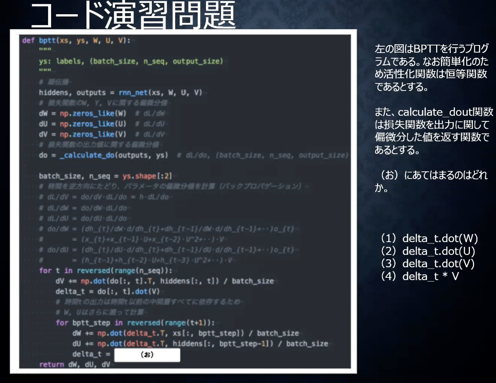
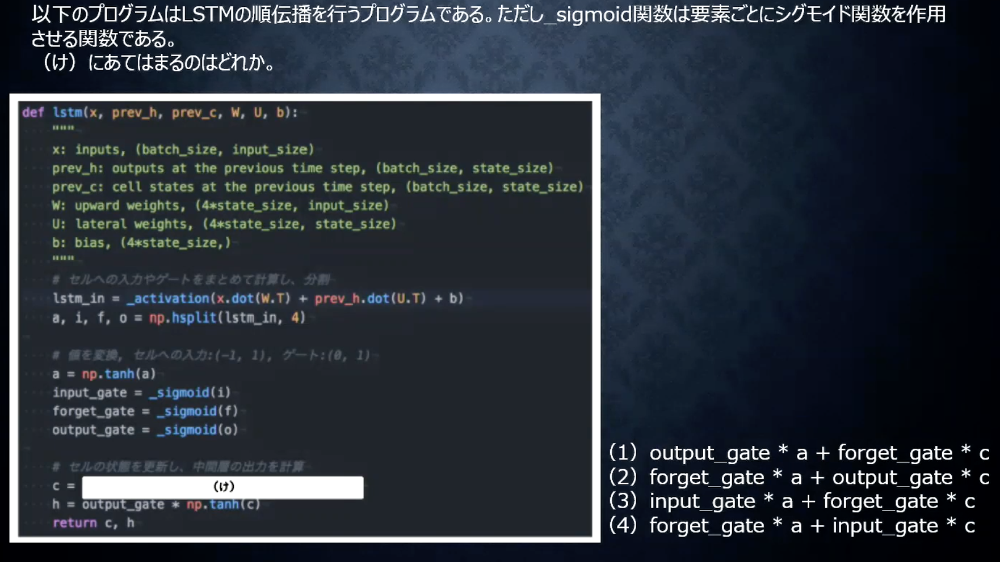

深層学習day3
Section1：再帰型ニューラルネットワーク
1.要点
●RNNとは何か
時系列データに適用可能なニューラルネットワーク。
ex)音声データ、テキストデータ、株価など
基本的な入力/中間/出力層の基本構造や関係性は変わらない。
中間層の出力を次の中間層に受け渡すことで時間的つながりを表現する。
RNNでは3種類の重みの設定が必要（Win/Wout/W←前の層からの重み）
x(入力値) → u(xに重みバイアスをかける) → z(uを活性化関数に入力)
→ v(zに重み、バイアスをかける) → y(vを活性化関数に入れる)
●BPTT(BackPropagationThrughTime)について
x → u → z → v → yの関係性に沿って順伝搬/逆伝搬させる。
過去の影響を受ける中間層の重み更新についてはΣがつく。
式を展開していくと数珠つなぎて式の中に出てくる（再起的）。
2.実装演習
深層学習Day3の演習をまとめて以下に表示
＊＊SimpleRNN＊＊
＊＊PredictSin＊＊
＊＊PredictWord＊＊
＊＊Word2Vecお試し＊＊
3.確認テスト考察/追加レポートなど
Q1：RNNの3つの重みの中で残りの1つは何の重みか。
①中間層の定義に用いられる重み、②中間層から出力される際にかけられる重み
残りの重みについても説明せよ。
A1：前の中間層間の影響/接続性を表現する重み
時系列データの関係性を表現するために必要であり、
数珠つなぎで再起的な構造を構築するための重要な重みである。
Q2(演習チャレンジ)：
A22
Q3：連鎖率をの原理を使いdz/dxを求めよ。
z=t^2,t=x+y
A3：

Q4：RNNの図のバイアスを数式を用いて表せ
A4：
Q4：コード演習問題（図参照）

A4：2
Section2：LSTM
1.要点
RNNの課題は長い時間を辿るほど勾配が消失していく。
レイヤーが深くなるほど勾配消失が起こりやすいのと同意義。
逆に、逆伝搬の際に勾配が大きくなり、勾配が爆発するリスクがある。
●LSTMとは
LSTMはRNNの一種。
1）CEC（ConstantErrorCell）：
中間層で過去のデータを記憶する部位。過去の勾配を1にする。
学習機能が無いため、CECの周辺に学習/取り出し機構(入力/出力ゲート)を設ける。
2）入力ゲート/出力ゲート
CECへ記憶/出力させるための機構。
入力ゲートの役割は、今回の入力/前回の出力値に重みをつけてCECに受け渡す。
3）忘却ゲート
古い情報を消去する機能。
前回のCEC/忘れる割合/CECへの入力の掛け算で計算する。
4）のぞき穴結合
CECの状態を加味して任意のタイミングで入出力できるようにする。
しかし、改善効果はあまりみられなかった。
2.実装演習
深層学習Day3の演習をまとめて以下に表示
＊＊SimpleRNN＊＊
＊＊PredictSin＊＊
＊＊PredictWord＊＊
＊＊Word2Vecお試し＊＊
3.確認テスト考察/追加レポートなど
Q1：シグモイド関数を微分した時入力値が0の時に最大値をとる。その値はいくらか？
A1：0.25
Q2（演習チャレンジ）：（さ）に当てはまるのはどれか。
A2：（1）
Q3：「とても」はなくなっても影響しない場合、どのゲートが作用するか
A3：忘却ゲート
Q4：LSTMの順伝搬を作用させるプログラムの内、（け）に当てはまるのはどれか

A4：（3）
Section3：GRU
1.要点
LSTMはパラメータが多く複雑であったため計算負荷が高いことが課題。
GRUはLSTMのパラメータを削減し、さらに精度が向上。
リセット/更新ゲートで過去の情報を制御。
2.実装演習
深層学習Day3の演習をまとめて以下に表示
＊＊SimpleRNN＊＊
＊＊PredictSin＊＊
＊＊PredictWord＊＊
＊＊Word2Vecお試し＊＊
3.確認テスト考察/追加レポートなど
Q1：LSTMとCECが抱える課題について、それぞれ簡潔に述べよ。
A1：LSTMは変数が多く計算負荷が大きい。CECは記憶のみで学習機能が無いために、
他の学習機構が必要になるため構造が複雑になる。
Q2：GRUの順伝搬を行うプログラムの（こ）に該当する
A2：4
Q3：LSTMとGRUの違いについて簡潔に説明せよ
A3：LSTMはDEC/入力/出力/忘却ゲートで過去の情報を計算するのに対して、
GRUはリセット/更新ゲートで制御可能なため、パラメータが少なく計算負荷を低減できる。
Section4：双方向RNN
1.要点過去の情報のみでなく将来の情報も加味して情報処理することで精度を向上させる。
機会翻訳や文章などの時間的な差があまり無いデータに対して適用すると有効。
過去から情報を伝搬する中間層と未来のから情報を伝搬する中間層の両方を加味して出絵よくを決定する。
2.実装演習
深層学習Day3の演習をまとめて以下に表示
＊＊SimpleRNN＊＊
＊＊PredictSin＊＊
＊＊PredictWord＊＊
＊＊Word2Vecお試し＊＊
3.確認テスト考察/追加レポートなど
Q1：（か）に当てはまるのはどれか
A1：4/過去の情報と将来の情報を同期させるためにaxis=1を選択する。
Section5：Seq2Seq
1.要点
Encoder-Decoderモデルの一種。時系列のデータを入力して、時系列のデータを出力する。
1）EncoderRNN
文をトークン/単語に区切ってone-hotベクトルを形成し、embeddingによりベクトルの次元を圧縮する。
意味の近さに従ってベクトルが割り振られる。
vac1をRNNに入力、HideenStateを出力し、vec2とともにRNNに入力する。
以上の手順で順繰りに処理を行っていく。
教師なし学習で学習できることが自然言語処理では重要。
（学習データにラベルを割り振る必要がないため、大量に学習できる）
2）DecoderRNN
①1単語目を作成②embeddingに従って順繰りに単語を生成（Detokenize）
3）HRED
前の文字の情報を次の情報に引き継ぐことで、文字の意味を考慮した文を生成する。
よくある答えを返しがちになってしまう。
4）VHRED
HREDの課題をVARの潜在変数の概念を追加することで、多様性を持たせる。
5）VAE
・オートエンコーダー
教師なし学習。エンコーダーとデコーダーからなる構造で、次元圧縮に用いられる
課題は、どのような構造に圧縮しているのかがわからないこと。
・VAE
圧縮したデータを潜在変数ｚの確率分布(０から1 )に押し込める。
Decoderの入力にばらつきを持たせて表現に多様性を持たせる。
2.実装演習
深層学習Day3の演習をまとめて以下に表示
＊＊SimpleRNN＊＊
＊＊PredictSin＊＊
＊＊PredictWord＊＊
＊＊Word2Vecお試し＊＊
3.確認テスト考察/追加レポートなど
Q1：次の中からseq2seqについて説明しているものを選べ
A1：（2）
Q2：（き）に当てはまるのはどれか。
A2：（1）one-hotベクトルとembeddingのドット積により、
任意の単語に対応するembeddingを取り出せる
Q3：VAEに関する以下の説明文中の空欄に当てはまる言葉を答えよ。
自己符号化器の潜在変数に____を導入したもの。
A3：確立分布
Q4：seq2seqとHRED、HREDとVHREDの違いを簡潔に説明せよ
A4：
（1）seq2seqとHRED：seq2seqは文脈の意味を加味できないのに対して、HREDは文脈の意味を加味して情報を取得できる。
（2）HREDとVHRED：HREDは表現の多様性が低いのに対して、VHREDはばらつきを加えることで表現の多様性を向上。
Section6：Word2Vec
1.要点
課題；RNNでは単語のような長さの異なるものをinputできない。
固定長形式で単語を表す必要がある。
One-hotベクトルをボキャブラリ数＊単語ベクトルの次元数の重みの行列を作成し、
固定長の情報量の少ないベクトルに変換する。
2.実装演習
深層学習Day3の演習をまとめて以下に表示
＊＊SimpleRNN＊＊
＊＊PredictSin＊＊
＊＊PredictWord＊＊
＊＊Word2Vecお試し＊＊
3.確認テスト考察/追加レポートなど
Section7：Attention Mechanism
1.要点
課題：seq2seqでは中間層の長さが決まっているため、長い文章に対応できない。
解決策：文章の長さに応じて内部表現の幅を広げられるようにする必要がある。
この解決策を取り入れたのがAttentionメカニズムである。
単語間の関連性の強さを学習する。
2.実装演習
深層学習Day3の演習をまとめて以下に表示
＊＊SimpleRNN＊＊
＊＊PredictSin＊＊
＊＊PredictWord＊＊
＊＊Word2Vecお試し＊＊
3.確認テスト考察/追加レポートなど
Q1：RNNとword2vec,seq2seq,Attentionの違いを簡潔に説明せよ。
A1：RNNは過去のデータを加味したニューラルネットワークで、時系列データの処理に適している。
word2vecは単語の分散表現ベクトルを得る手法
seq2seqは時系列データから別の時系列データを得る手法
Attentionは時系列データの関連性の重みつける
深層学習day4
Section1：強化学習
1.要点
1)強化学習とは
行動の結果として得られる報酬を最大化するように、行動を選択するように学習する方法。
2)強化学習の応用例
会社の販売促進
エージェント：販促メールを送るソフト
行動：顧客に対して送信する/しない
報酬：成約利益と広告コストの差分を報酬とする
3)探索と利用のトレードオフ
強化学習では、前提知識が完全で無い状態でスタートするため、試行の結果得た学びから最適な手段を選択する。
ベストな手段のみを取ると探索ができない。一方で、未知の行動を撮り続ければ過去の経験が生かせない。
4)強化学習のイメージ
方策/観測/報酬の3つの値から行動を決定
5)強化学習の差分
教師なし学習ではパターンや構造を作ることが目的であるのに対して、
強化学習では、逐次的に探索し、行動結果のなかで最適な行動を選定すること
6)行動価値関数
状態価値と行動価値の2つがある。
状態の価値のみの評価を行うのが状態価値関数
状態と価値の組み合わせで評価するのが行動価値関数
7)方策関数
方策ベースの強化学習手法において、
ある状態に置かれた時にどのような行動をとるかの確立を与える関数のこと。
8)方策勾配法
重みと行動価値関数の微分＊学習率の和で計算
行動価値関数定義を行う必要あり。
行動関数はある行動を取った時の総和になる。
Section2：AlphaGo
1.要点
これまでに、Alpha Go Lee、Alpha Go Zeroの2つの方法が提案されている。
●Alpha Go Leeの解説
PolicyNet:方策関数とValueNet：行動価値関数の2つのニューラルネットワークからなる。
画像として認識させ、碁盤19x19マスに対して0,1,2で白/黒/空欄を表現するなど、その他含め、48チャンネルで表現する。
PolicyNetは着手予想率が出力するため、softmax関数を用いて出力する。
VAlueNetは勝率を表したいため、-1〜1の範囲で出力するため、Tanh関数で出力する。
・PolicyNetの学習
①PolicyNetの教師あり学習：実際の棋譜データを用いて学習。この学習のみで57％の精度。
②RollOutPolicy：ニューラルネットワークではなく、
線形の方策関数。探索中に高速に着手確立を出すために使用される。
PolicyNet/ValueNetの強化学習はモンテカルロ木探索を用いて行われる。
・ValueNetの学習
SLPolicyNet（教師あり学習で作ったPolicyNet）を使ってN手まで打ち、N＋1手でS (N+1）手までランダムに打ち、
その後RL PolicyNetで終局まで打つ。勝敗報酬をRとする。S(N+1)とRを教師データとして回帰問題として最小二乗誤差を計算。
ミニバッチ32で五千万回学習。異なるPolicyNetを使う理由は、過学習の抑制。
●Alpha Go Zeroの解説
強化学習のみで作ったモデル。
石の配置のみに着目して（ヒューリスティックの排除）
PolicyNetとValueNetを統合（policyValueNet）し、ResidualNetを導入。
モンテカルロ探索木からロールアウトをなくした。
ResidualBlock:ネットワークにショートカットを設けることで勾配爆発や勾配消失が
起こりづらなることで、ネットワークを100層でも安定して学習できる。
また、異なるネットワークでアンサンブル効果により改善。
・ResiduanBlockの工夫点
BottleNeck/PreActivation
・Networkの工夫点
WideResNet/PyramidNet
Section3：軽量化・高速化技術
1.要点
分散深層学習：PCの計算速度が１８ヶ月で２倍になるのに対して深層学習の計算量は年１０倍に増加。
その変化に適合するために計算負荷を分散/並列させる必要がある。
CPU以外でのハードウェアで計算負荷を補うなど。
1)データ並列
①PCなどの計算機を並列に接続し、計算を分散させる
②メインPCに機械学習用演算機をつける（GPU/TPUなど）
・同期型：各ワーカーでの結果を集約して親モデルに統合する。その後親モデルや子モデルにコピー。
・非同期型：バラバラにモデルに結果を反映させる。他のPCの計算が終わるのを待たない。その分スピードが早い。
現在は性能の観点から同期型が主流
（自分のデータセンターでは同期型、クラウド型の分散リソースの場合は非同期型で進めるのが一般的）
2)モデル並列
ネットワークの途中でモデルを分割してワーカーに渡す。
モデル並列化は1台のPCの中でGPUごと割り振って進めるなどの方法が用いられる。
分散した結果を集計する必要があるので同一のPC内で行うことが望ましいため、PC間ではあまり行われない。
大きなモデルほど、モデルの並列化効果が得られる。
tensorflowで並列学習ができる。
3)GPU
GPGPU：グラフィックのみでなく様々な計算で用いれる。
CPU：高性能な装置だけど並列で計算がしにくい
GPU：単純な行列計算に特化した演算機。簡単な計算を並列でたくさんできる
CUDAを使用するのが一般的。TensorFlow/PyTorchにて指定して使用可能。
4)量子化
64bit浮動小数点から32bit浮動小数点などの下位の精度に落としメモリ使用量や演算負荷を低減する。
デメリットとして、小数点の切り捨てにより精度が下がることが挙げられる。
5)蒸留
巨大なニューラルネットワークモデルを用いて軽量なモデルを作る行為。
教師モデルと生徒モデルの比較をし、誤差をに基づいて生徒モデルの重みを更新する。
BackPropagation/Knowledge Distilation/Hint Taraingなどが手法として用いられる。
6)プルーニング
モデルの精度に寄与しないパラメータを削減する方法。
モデルの軽量化と高精度化が図れる。
重みの小さい（閾値以下）のニューロンを削減する。
Section4：応用モデル
1.要点
1)MobileNet
計算量が増えると資金が必要。環境が整っていなくても計算できるようにすることを目的に開発。
①DepthwiseConvolution/②PointwinseConvolutionにより畳み込みの計算量を簡素化。
●計算方法
①DepthwiseConvolution：カーネルフィルタがのチャンネルを1に固定。入力の3チャンネルごとに計算
②PointwinseConvolution:1x1のフィルターで畳み込み
結論：畳み込みの方法を分けることによって計算量が減る
2)DenseNet
Dense Block：DenseBlock内で複数のレイヤーをもち、
レイヤーを通るごとにチャンネルを増やす処理により情報量を増やす。
チャンネル数の増やすレートGrouthRateがハイパーパラメータ。
増えすぎたそうを削減する層（TransitionLayer）でチャンネル数を元に戻す。
TransitionLayerの働きで各ブロックでの特徴量マップのサイズが一定になっている。
3)BatchNorm/Layer正規化/Instance正規化
BatchNorm：バッチ間のデータの偏りをなくすために正規化する。
バッチサイズが小さいと計算が収束しない。
計算リソースに応じてバッチサイズを変える必要が出てくるため、計算環境によって結果が左右される。
チャンネル毎に正規化。
Layer正規化：1画像ごとに正規化。ミニバッチのサイズに影響を受けない。
Instance正規化：1チャンネルごとに正規化。正規化の単位を細かくすることでバッチサイズの影響を受けない。
4)Wavenet
音声の生成モデル。
Dilated convolutionという、深くなる程たたみ込むリンクを離すような処理を行う。
※次元間のつながりがあるために畳み込みニューラルネットワークが使用できる。
長い時間範囲の情報を出力に反映できる。
しかし、RNNでは過去の不正解がのちにも影響することで計算が不安定化する問題がある。
そこで、TeacherForcingという正解ラベルを与えて学習させる方法により計算安定化ができる。
デメリットとして過学習が発生するため、確立的にTeacherForcingを与えて学習をする。
Section5：Transformer
1.要点
Tranformerはseq2seq(EncoderーDecoderモデル)×Attenrion。
1)seq2seq
系列情報から系列情報に変換する。
Encoderで内部状態ベクトルに変換、内部状態ベクトルを元に先頭の文字を適当な初期値で設定。
教師データとの差分を受けて内部ベクトルの修正により学習する。
2)Self-Attention
長文の読み込みなど、情報量の増加に対して、注意する単語を選定して情報の希薄化を防ぐ。
Attentionはqueryに一致するkeyを索引してvalueを抜き出すそうだとみなせる（辞書オブジェクトの機能）
RNNを用いずにAttention機構のみで計算するため計算負荷が少ない。
RNNを使っていないため、文字の位置情報を追加している。
注意機構には①ソースターゲット注意機構/②自己注意機構（SelfAttention）の2つある。
自己注意機構では注意する箇所を学習して決めるため重要な機能となる。
位置情報を保持したまま順伝搬させるため線形変換を行う。
次元に応じてスケーリングも必要。
Section6：物体検知・セグメンテーション
1.要点
物体認識は分類/物体検出/意味領域分割/個体領域分割をにことを指す。
分類の難易度は分類＜物体検出＜意味領域分割＜個体領域分割となる。
自分の学習させたい内容に応じて、物体検出コンペで用いられているようなデータセットを選定する。
●代表的なデータセット
VOC12：12年当初のデータセットで数も現在に比べたら少ない
ILSVRC17：Imagenetのサブセット（1400万枚以上）クラスも多い
MSCOCO：123000件で少ないが、位置に対する新たな指標を提案
OICOD18：最大のデータセット
MSCOCO18やOICOD18は物体が画像にはいっている個数が多く、日常使いに適用可能。
●物体認識の指標
・IoU：物体位置の予測精度 ＝ TP/(TP＋FP FN) ＊Jaccard係数とも呼ばれる
・AP：PR曲線の下側面積（クラスラベル毎）
・mAP：クラス毎のAPの算術平均
・FPS：物体検出の速度
●物体検知の大枠
AlexNetの登場によりSIFTかたDCNNがトレンドに。
物体検知のフレームワークは大きく2つ。
①二段回検出器：物体と領域の検出分けて行う精度が高いが計算負荷が高く時間がかかる。
②一段階検出器：物体と領域の検出を同時に行う。相対的に精度が低いが高速。
●SSD（1段階検出器）：
デフォルトボックスを修正してconf.を出力させる。
SSD300/512と画像サイズに応じて名称が変わる。
VGG16と似た構造となっているが、違いはFC層をConv層に変更。
大きさの異なる特徴的Mapを用いて出力を作成し出力1つに対してk個の特徴マップができる。
損失関数はconfidenceに対する損失と位置に対する損失を考慮している。
●Semantic Segmentation：
Poolingとconvolutionを行うことで情報を落とし、UP-samplingにより復元する。
Poolingにより輪郭などのローカルな情報を落とし、
Up-samplingにより元の解像度に戻す過程でローカルな情報を復元する。